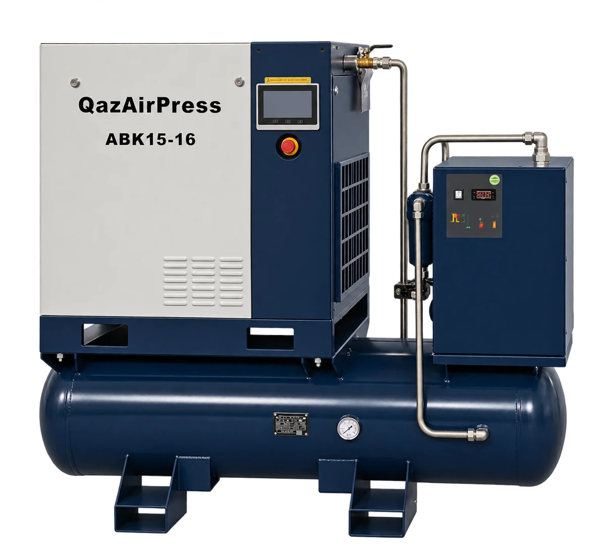
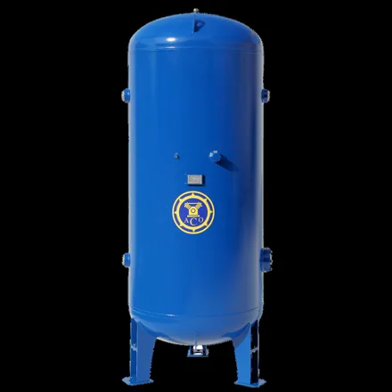
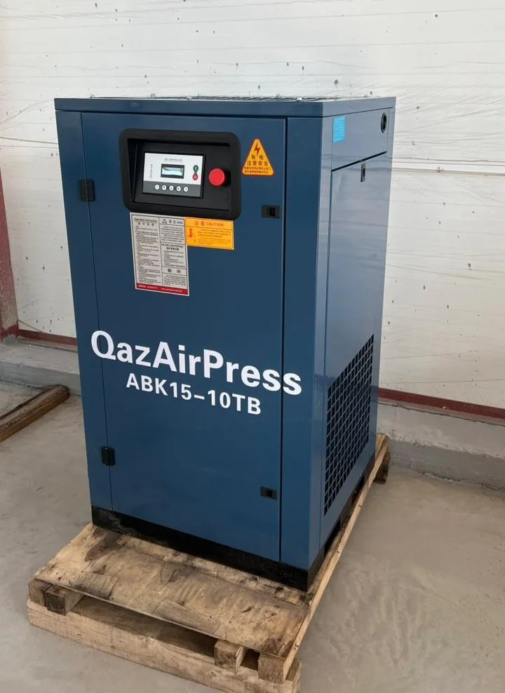
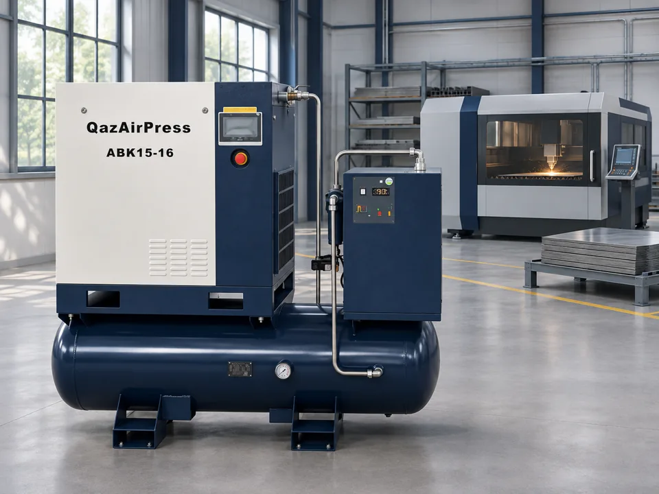

01 / КОМПРЕССОРЫ↗
Воздух для станков.
Мощность для цеха.
7 моделей винтовых компрессоров.
От отдельного участка до производственной линии.
7,5–75 кВт ABK15-16 · визуализация модели
Винтовые компрессоры 7,5–75 кВт для ваших станков и рабочих смен. Подбор, подготовка воздуха и поставка по Казахстану.
Не знаете нужных параметров?
Начнём с задачи вашего производства.

От компрессора до расходного элемента. Поможем собрать систему под требования ваших станков.
Открыть каталог ↗7 моделей винтовых компрессоров.
От отдельного участка до производственной линии.

Сравните три модели по основным параметрам. Окончательный подбор — по расходу, давлению и режиму работы ваших станков.
Не уверены в параметрах?
Поможем с подбором ↗

* Цены и параметры сверены с каталогом QazAirPress на Satu.kz 17.11.2026. Актуальные цена, наличие и комплектация — в предложении.
Для чего нужен воздух? От ответа зависят давление, расход и требования к его подготовке.

Подберём давление, расход, осушение и фильтрацию по требованиям вашего станка.

Воздух для пневмоприводов, инструмента и продувки деталей.
Подобрать для цеха ↗
Учтём работу пневмоцилиндров, заслонок и автоматики линии.
Обсудить производство ↗Иллюстрации созданы с помощью ИИ на основе фотографий реальных моделей. Это возможные сценарии применения; состав системы и условия установки подбираются отдельно.
Один компрессор — часть решения. Подберём остальные компоненты, чтобы воздух соответствовал требованиям ваших станков.
Создаёт поток воздуха с нужным расходом и давлением.
Помогает сгладить короткие пики потребления.
Осушение и фильтрация под требования процесса.
Подготовленный воздух в нужной точке производства.
Показаны функции компонентов. Состав и порядок установки уточняются для конкретного проекта.
Подобрать систему целикомМожно прийти с готовыми параметрами. Или начать со списка станков и режима работы.
Познакомиться с QazAirPress ↗Уточним расход, давление и одновременную работу оборудования. Мощность подбирается под задачу.
Разберёмся с ресивером, осушителем и фильтрами. Проверим требования к качеству воздуха.
Согласуем исполнение, стоимость, доставку, гарантию и обслуживание в предложении.
Укажите оборудование и адрес. Рассчитаем перевозку, согласуем срок и условия разгрузки.
Рассчитать доставкуФильтры, сепараторы, масло и датчики для обслуживания компрессора. Если оборудование работает с ошибкой — сообщите модель и опишите, что происходит.
Обсудить обслуживаниеВозможность выезда, работы и сроки согласуем для вашего оборудования и города.Что важно для выбора, цены и заказа оборудования.
+7 776 171 7111Нужны расход и давление каждого станка, а также понимание, какие из них работают одновременно. Если этих данных нет, пришлите список оборудования или фото шильдиков. Поможем собрать исходные параметры и подобрать модель.
Нет. При одинаковой мощности модели могут давать разный расход при разном давлении. Начните с потребностей станков, а затем сравните производительность компрессора и условия её измерения.
Попросите у изготовителя станка требования к давлению, расходу, точке росы, частицам и остаточному маслу. По ним подбираются компрессор и подготовка воздуха. Один только осушитель ещё не гарантирует, что воздух подойдёт лазеру.
Напишите модель, количество и город доставки. Уточним наличие, комплектацию, стоимость оборудования и перевозки. Состав заказа, срок, оплату и гарантийные условия согласуем до покупки.
Пришлите модель компрессора, артикул старого элемента и фото маркировки. Для некоторых позиций понадобятся размеры и данные о подключении. Проверим совместимость до заказа.
В карточках сохранены единицы технической таблицы продавца. Бар и стандартная атмосфера немного различаются: 1 атм = 1,01325 бар. Укажите требования станка в его единицах; перед подбором уточним также, избыточное это давление или абсолютное.
Условия зависят от модели и исполнения. Перед покупкой согласуем гарантийный срок, начало его отсчёта, состав поставки и требования к обслуживанию. Эти условия должны быть зафиксированы в предложении и договоре.
Какие станки должны работать? Сколько смен? В какой город нужна поставка? Этого достаточно, чтобы начать разговор.